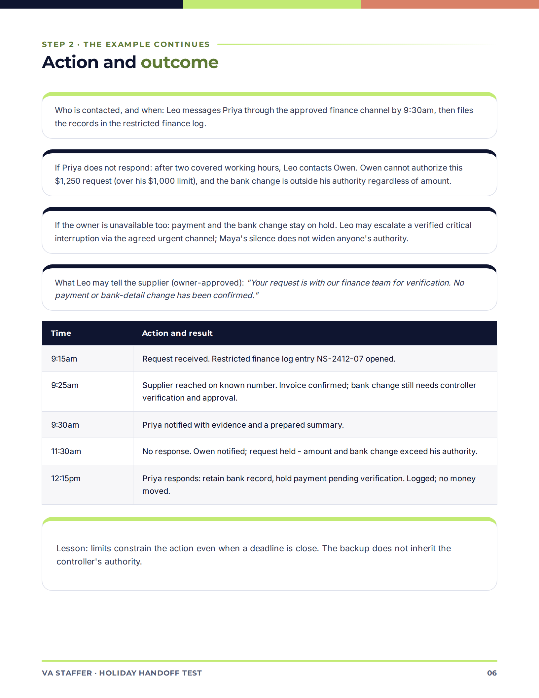
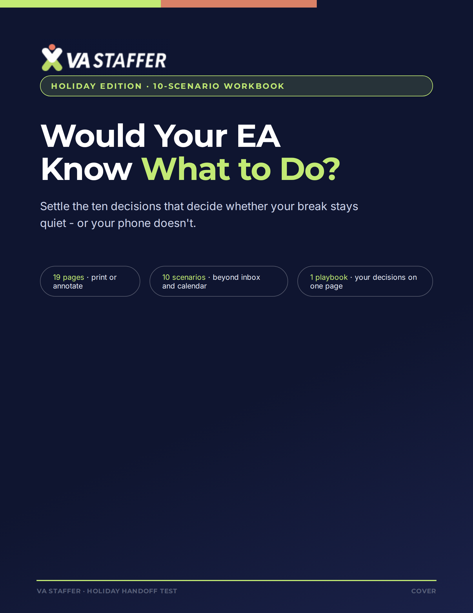

Define the limits.
Write down allowed actions, spending limits and the decisions that need approval.
BEFORE YOU TAKE A BREAK
Step away with clearer decisions.
Not more “quick questions.”
Use the Holiday Handoff Test to decide what your assistant can handle, what must wait, and when to contact you.
THE HOLIDAY HANDOFF TEST
Get the 19-page workbook. Start with the decisions you want to settle before you go.
Demo preview · use sample details


BEFORE YOU STEP AWAY
Write down allowed actions, spending limits and the decisions that need approval.
Name contacts, response windows and backups before anything becomes urgent.
Bring the rules together in one page, then test them with your covering person.
No assistant yet? Use the workbook to define future support.